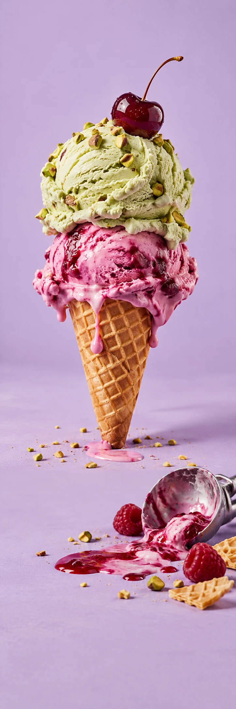

SCOOP CLUB
IJs & horecaSmaakcampagne
SCOOP CLUB / THE GOOD STUFF
EEN BOLLETJE
GELUK.
Bekijk de smaken SCOOP CLUB / VAN DICHTBIJ
Nog één smaak
om over te twijfelen.
Framboos of pistache? Een klein hapje of meteen die hele bol? Sommige keuzes zijn gewoon fijn om te hebben. Ontdek wat er in de vitrine ligt.
01Kies je smaak
02Pak een lepeltje
03Geniet ervan
SMELT VOOR
IETS LEUKS.
Voor een middag die net iets leuker mag.
Bekijk de smaken